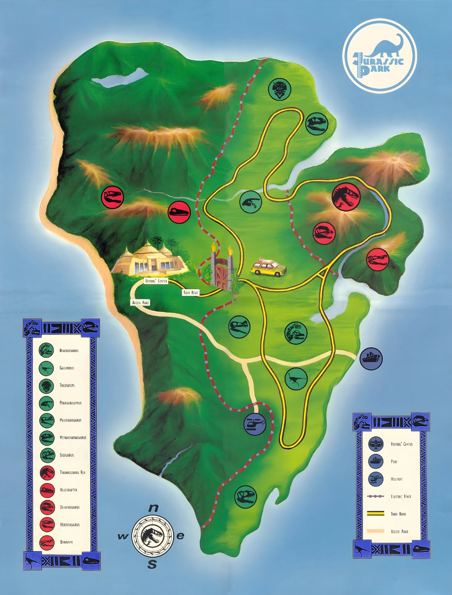
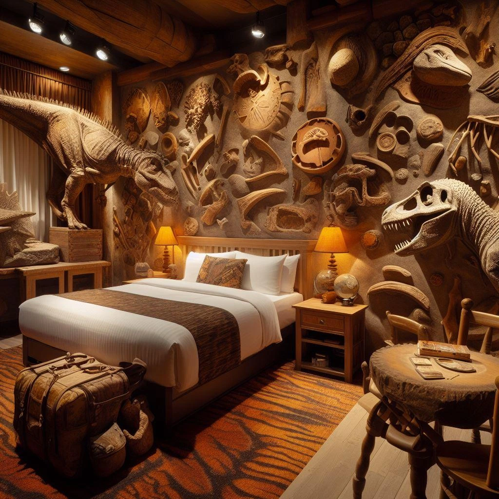
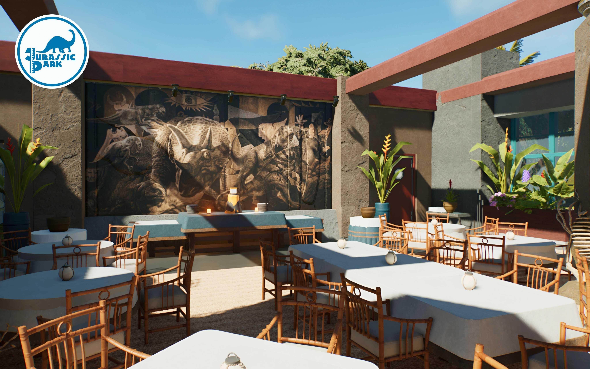
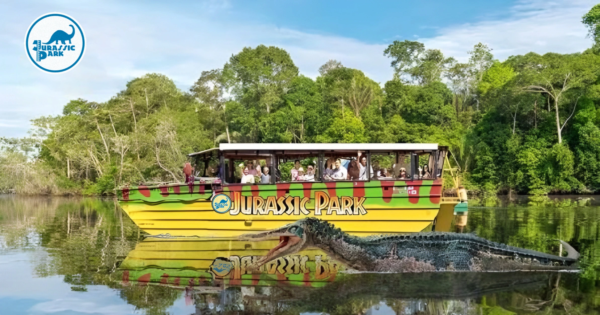
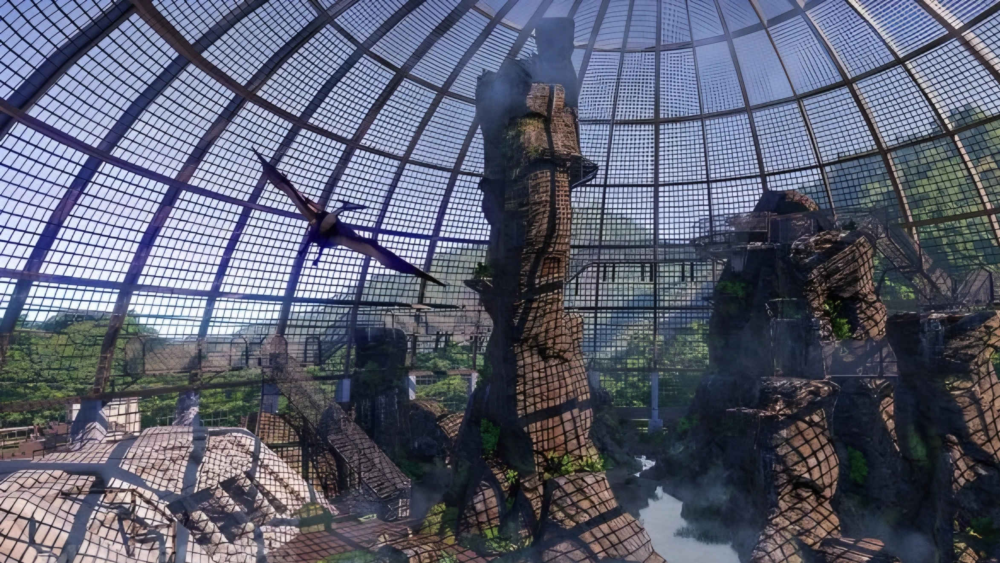

Benvenuti a Jurassic Park
L'Inizio di una Nuova Era
"Abbiamo fatto miracoli con la scienza. Benvenuti nel luogo in cui la preistoria diventa il presente."
— John Hammond, Fondatore della InGen
Benvenuti su Isla Nublar, il palcoscenico della più grande impresa scientifica e turistica della storia dell'umanità. Grazie alle rivoluzionarie tecnologie di bioingegneria della InGen, abbiamo riportato in vita i giganti del passato. Jurassic Park non è solo un parco safari: è un'esperienza che ridefinisce il concetto di meraviglia.
🏝️ L'Isola: La Culla del Passato
Situata a 120 miglia al largo della costa della Costa Rica, Isla Nublar è un paradiso tropicale di origine vulcanica. Il suo nome è legato alla nebbia che spesso la avvolge. L'isola è di fatto soggetta a tempeste tropicali, ma non temete! Tutto è studiato per garantire la vostra sicurezza e il vostro divertimento su Isla Nublar. Nello specifico:
- Il Clima: caldo e umido, perfetto per sostenere la lussureggiante flora del Mesozoico ricreata dai nostri botanici.
- La Sicurezza: l'isola è interamente percorsa da oltre 80 chilometri di recinzioni elettrificate ad alto voltaggio (10.000V), monitorate h24 dal nostro avanzatissimo Centro di Controllo.
- Attrazioni Principali: dal tour automatizzato a bordo delle nostre Ford Explorer elettriche alla maestosa Laguna dei Dinosauri, ogni angolo dell'isola è progettato per lasciarvi a bocca aperta.

🏨 Gli Alloggi: Il Safari Lodge
Il lusso incontra la preistoria. Il nostro Safari Lodge offre tutti i comfort di un resort a 5 stelle, immerso nel cuore della giungla ma in totale sicurezza.
- Le Suite: camere panoramiche con vetrate blindate a prova di impatto, che si affacciano direttamente sulle pianure dei Brachiosauri.
- Servizi esclusivi: una piscina d'acqua dolce a sfioro, una spa con trattamenti a base di estratti botanici dell'isola e un salone lounge per rilassarsi dopo una giornata di esplorazione.

🍽️ Ristorazione: Sapori dal Mondo (e dal Passato)
La nostra offerta culinaria è curata da chef di fama internazionale, per soddisfare sia i palati più raffinati sia gli avventurieri più giovani.
| Ristorante | Specialità | Atmosfera |
|---|
| The Les Gigantes |
Alta cucina fusion e selezione di vini pregiati. |
Elegante, con vista sulla recinzione del T-Rex. |
| L'Angolo del DNA |
Buffet internazionale e menu a tema per famiglie. |
Informale, situato all'interno del Visitor Center. |
| Oasi Tropicale |
Cocktail esotici e snack veloci. |
Bar a bordo piscina nel Safari Lodge. |
Nota: tutti i nostri ingredienti sono importati freschi ogni giorno dalla terraferma.

🧬 Il Progetto: Scienza e Visione
Dietro lo spettacolo visivo c'è il cuore pulsante della scienza InGen. Il nostro team di genetisti, guidato dal Dr. Henry Wu, ha compiuto l'impossibile estraendo il DNA dei dinosauri intrappolato nell'ambra preistorica. Ogni creatura che vedrete camminare è il risultato di anni di dedizione, precisione e amore per la scoperta.
Abbiamo speso cifre incalcolabili per garantire che tutto sia perfetto. Non abbiamo badato a spese.


Esplora Isla Nublar
I Nostri Safari Esclusivi
Al Jurassic Park l'avventura ha molte forme. Abbiamo progettato tre percorsi unici per permettervi di osservare i dinosauri nei loro habitat naturali, offrendo punti di vista ravvicinati e spettacolari, sempre all'insegna della massima sicurezza.
🚙 1. Il Main Tour: Il Safari in Jeep Automatizzato
Il classico e intramontabile tour del parco. Salite a bordo delle nostre iconiche Ford Explorer elettriche, guidate da un sistema computerizzato centrale su rotaia elettrificata. Nessun conducente, nessuna distrazione: solo voi e la preistoria.
- L'Esperienza: il veicolo vi guiderà attraverso i massicci cancelli di pietra e vi accompagnerà lungo un percorso di oltre 30 chilometri, attraversando i recinti dei grandi erbivori e dei super-predatori.
- Audio-Guida di Bordo: ogni vettura è dotata di display interattivi e di una guida vocale (narrata dal celebre Richard Kiley) che vi spiegherà la fauna circostante in tempo reale.
- Incontri Principali: il branco di Dilofosauri nella foresta primaria, le maestose pianure del Triceratopo, il paddock principale del leggendario Tyrannosaurus Rex.
⚠️ Nota di Sicurezza: le vetture sono dotate di vetri in plexiglass rinforzato. Si prega di rimanere sempre all'interno del veicolo e di non spegnere le luci di cortesia.

🚤 2. Il Jungle River Cruise: Il Safari Fluviale
Per chi cerca un approccio più selvaggio e primordiale, il safari sul fiume offre una prospettiva completamente diversa, navigando nel cuore profondo della giungla di Isla Nublar.
- L'Esperienza: a bordo di imbarcazioni a propulsione silenziosa da 24 posti, scivolerete lungo le acque del Fiume Dilofosauro. Il silenzio del motore permette di avvicinarsi agli animali senza disturbarli, osservandoli mentre si abbeverano sulle rive.
- L'Ambiente: il fiume taglia canyon rocciosi e zone di fitta vegetazione tropicale, dove i dinosauri si sentono liberi di muoversi senza barriere visibili.
- Incontri Principali: i giganteschi Brachiosauri che si nutrono dalle cime degli alberi sopra il fiume, gruppi di Stegosauri lungo le sponde fangose.
Nota: il percorso costeggia l'area della Voliera, offrendo uno sguardo dal basso.

🦅 3. L'Aviary Tour: Il Safari nella Voliera dei Pterosauri
Un'esperienza mozzafiato dedicata ai dominatori dei cieli del Mesozoico. La nostra Voliera è una gigantesca struttura a cupola geodetica in rete d'acciaio, che ricrea un microclima montano e nebbioso.
- L'Esperienza: camminerete su una serie di passerelle sospese e trasparenti ad alta quota, per osservare i rettili volanti nel loro elemento naturale: l'aria.
- L'Ambiente: una fitta nebbia artificiale e cascate scoscese ricreano l'ambiente perfetto per la nidificazione sulle pareti rocciose all'interno della cupola.
- Incontri Principali: i maestosi Pteranodonti con la loro impressionante apertura alare mentre planano a pochi metri dalle passerelle, i piccoli dei rettili volanti nei loro nidi artificiali aggrappati alle rocce.

Guida ai Dinosauri
Chi Incontrerai su Isla Nublar
🌿 I Giganti Erbivori
Apatosauro
Dieta: erbivoro (fogliame alto) · Dove trovarlo: Laguna dei Giganti e zone umide
Grande dinosauro sauropode vissuto nel Giurassico superiore (circa 152 milioni di anni fa). Famoso per il collo e la coda lunghi, misura in media 21-23 metri e pesa tra 16 e 35 tonnellate. È il gigante gentile del parco.
Triceratopo
Dieta: erbivoro (arbusti e radici) · Dove trovarlo: praterie a nord
Vissuto nel Cretaceo superiore (68-66 milioni di anni fa) nell'attuale Nord America. Riconoscibile per l'enorme cranio, un pesante collare osseo e tre corna: pesa fino a 10-12 tonnellate ed è lungo fino a 9 metri. Nota per i visitatori: rimanere all'interno dei veicoli durante il safari, i triceratopi tendono a caricare se si sentono minacciati.
Stegosauro
Dieta: erbivoro (felci e piante basse) · Dove trovarlo: pineta
Vissuto nel Giurassico superiore (150 milioni di anni fa) in Nord America. Raggiunge i 7-9 metri di lunghezza, 4 metri di altezza e un peso di 5-7 tonnellate. Caratterizzato da 17 ampie placche ossee sul dorso e da una coda dotata di lunghe punte difensive.
Euoplocephalus
Dieta: erbivoro (tuberi e vegetazione coriacea) · Dove trovarlo: colline ad est
Uno dei più grandi anchilosauri, vissuto nel Cretaceo superiore (76-70 milioni di anni fa). Il nome significa "testa ben corazzata". Circa 6-7 metri di lunghezza, un'altezza al garrese di 1,5 metri e un peso stimato di 2 tonnellate. Il corpo è protetto da placche ossee (osteodermi); la coda termina con una pesante mazza ossea che può pesare fino a 20 kg. Molto schivo, tra i più difficili da avvistare.
🦆 I Sociali a Becco d'Anatra
Maiasaura
Dieta: erbivoro · Dove trovarlo: zona nord del parco
Il nome significa "Buona Madre Lucertola". Cuore pulsante delle aree dedicate alla cura dei cuccioli. Raggiunge i 9 metri di lunghezza, 3 metri di altezza e circa 4 tonnellate di peso. Muso piatto a forma di becco, senza grandi creste ossee.
Hadrosaurus
Dieta: erbivoro · Dove trovarlo: grandi pianure centrali
Famiglia di grandi erbivori del Cretaceo (85-66 milioni di anni fa). Muso piatto ed elaborata dentatura; quadrupedi ma in grado di correre su due zampe, vivono in grandi branchi nomadi. Estremamente sensibili ai rumori.
Parasaurolophus
Dieta: erbivoro · Dove trovarlo: safari sul fiume
Grande adrosauro del tardo Cretaceo. Lungo fino a 10 metri e oltre 5 tonnellate, riconoscibile dalla spettacolare cresta ossea cava ricurva all'indietro, usata come cassa di risonanza per emettere profondi suoni a bassa frequenza. Al tramonto, potrai ascoltare la loro spettacolare sinfonia.
🌱 I Piccoli Erbivori
Hypsilophodon
Dieta: erbivoro (fogliame tenero, frutti) · Dove trovarlo: giungla
Spesso definito "cervo del mesozoico", raggiunge circa 1,8 metri di lunghezza e 20 kg di peso. Zampe posteriori lunghe e agili, coda rigida: un corridore eccezionale.
Othnielia
Dieta: erbivoro (felci e germogli) · Dove trovarlo: giungla est
Vissuto nel Giurassico superiore, circa 150 milioni di anni fa. Adulto lungo 1,5-2 metri, circa 10 kg di peso. Durante il safari potrai vederli fare capolino tra le felci.
Microceratus
Dieta: erbivoro (frutti, semi, foglie) · Dove trovarlo: giungla fluviale
I ceratopsidi in miniatura del parco. Lungo 1,5-2 metri, circa 10 kg di peso.
♻️ I Piccoli Ecologisti del Parco
Procompsognathus
Dieta: carnivoro/spazzino · Dove trovarlo: libero in tutto il parco
Piccoli predatori, affettuosamente chiamati "compy". Muovendosi in gruppo, ripuliscono i recinti dagli scarti organici dei grandi erbivori, mantenendo l'ecosistema di Isla Nublar pulito e sicuro.
🦖 I Carnivori e i Superpredatori
Tyrannosaurus-rex
Dieta: carnivoro (prede vive) · Dove trovarlo: Regno del T-rex
La perla all'occhiello di Isla Nublar. Predatore bipede del Cretaceo superiore, raggiunge i 13 metri di lunghezza e le 8-9 tonnellate di peso. Vista eccellente, potente olfatto, zampe posteriori robuste e lunga coda per bilanciare la massiccia testa. Non può vedere prede che restano immobili.
Velociraptor
Dieta: carnivoro (in branco) · Dove trovarlo: gabbie di massima sicurezza ad accesso limitato
Il nome significa "ladro veloce". Si stima siano intelligenti quanto gli odierni scimpanzé. Agilità fulminea, artigli a falce retrattili e spiccata capacità di coordinazione strategica. Visibile solo attraverso i vetri blindati dell'area di massima sicurezza.
Dilophosaurus
Dieta: carnivoro (mammiferi e pesci) · Dove trovarlo: recinto fluviale meridionale
Predatore affascinante e letale, lungo circa 3 metri, con due creste ossee a "V" parallele sul cranio. Nota la sua tecnica di caccia: sputa una saliva altamente neurotossica in grado di accecare e paralizzare le prede da lunghe distanze.
☁️ I Dominatori dei Cieli
Caeradactylus
Dieta: piscivoro/carnivoro opportunista · Dove trovarlo: Voliera
Non è un dinosauro, ma questo maestoso pterosauro domina i cieli della nostra gigantesca voliera geodetica. Apertura alare di 4-5 metri e becco seghettato perfetto per afferrare le prede al volo.
🔒 Informazioni di sicurezza per i visitatori: per la vostra incolumità, non superate mai le barriere elettrificate (10.000 volt), non nutrite gli animali se non espressamente autorizzati dal personale InGen e, in caso di blackout o emergenza, rimanete all'interno dei veicoli a guida autonoma ed attendete le istruzioni del computer centrale.
Tariffe e Pacchetti Esclusivi
Vivi il Sogno
Jurassic Park è un'esperienza d'élite progettata per chi vuole testimoniare la storia in prima persona. Abbiamo investito risorse incalcolabili per offrirvi il massimo del lusso e della sicurezza. Come direbbe il nostro fondatore: non abbiamo badato a spese.
🎫 Standard Pass
"The Explorer"
$2.500 USD / notte, per persona
Il pacchetto base per chi vuole assaporare la preistoria.
- Accesso al Main Tour (Jeep automatizzate)
- Alloggio in camera Standard al Safari Lodge
- Colazione inclusa all'Angolo del DNA
Limitazioni: accesso alla Voliera non incluso.
🥇 Gold Pass
"The Amber Club"
$5.500 USD / notte, per persona
L'esperienza completa per veri appassionati di paleontologia.
- Accesso illimitato a tutti e tre i Safari (Jeep, Fiume, Voliera)
- Suite panoramica con vista sul paddock dei Brachiosauri
- Cena di gala al ristorante The Les Gigantes
- Tour privato del Laboratorio di Genetica con il Dr. Henry Wu
👑 VIP Pass
"The Hammond Experience"
$15.000 USD / notte, per persona
Il massimo del lusso, limitato a soli 10 visitatori a settimana.
- Tutti i vantaggi del Gold Pass
- Trasporto in elicottero privato InGen da San José direttamente all'eliporto dell'isola
- Incontro privato con John Hammond e sessione fotografica esclusiva con un cucciolo di Raptor appena nato
📝 Modulo di Prenotazione Online
(Nota di Design: qui puoi inserire un classico form con campi per Nome, Email, Scelta del Pacchetto e Date del viaggio.)
Spuntando la casella "Accetto i Termini e le Condizioni", il richiedente solleva la InGen Technologies, i suoi dipendenti e i suoi programmatori (incluso il reparto sistemi informatici) da qualsiasi responsabilità civile o penale in caso di interruzione improvvisa dell'energia elettrica causata da eventi atmosferici o sabotaggi interni.
❓ Domande Frequenti
D: I bambini pagano il biglietto intero?
R: Sì. Tuttavia, offriamo uno sconto del 10% se dimostrano una conoscenza approfondita della differenza tra un Brachiosauro e un Triceratopo!
D: Cosa succede in caso di evacuazione dell'isola per uragano?
R: Il nostro capo della sicurezza, Ray Arnold, guiderà le procedure di emergenza. In caso di blackout totale, vi verrà chiesto di "tenervi forte" mentre riavviamo i sistemi principali dal bunker.
D: Posso portare a casa un souvenir, come un pezzo di ambra o un uovo?
R: Assolutamente no. Il contrabbando di materiale di qualsiasi natura è severamente vietato.